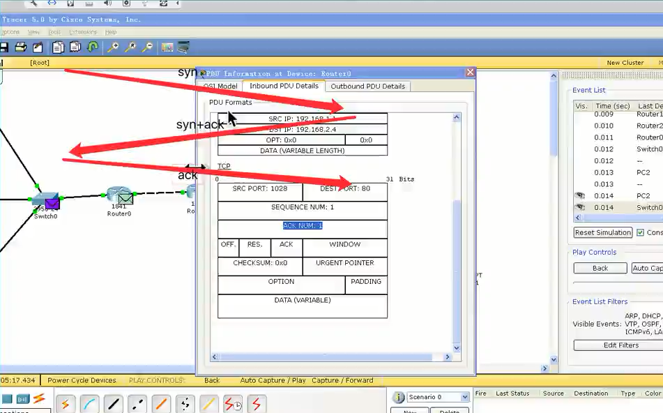
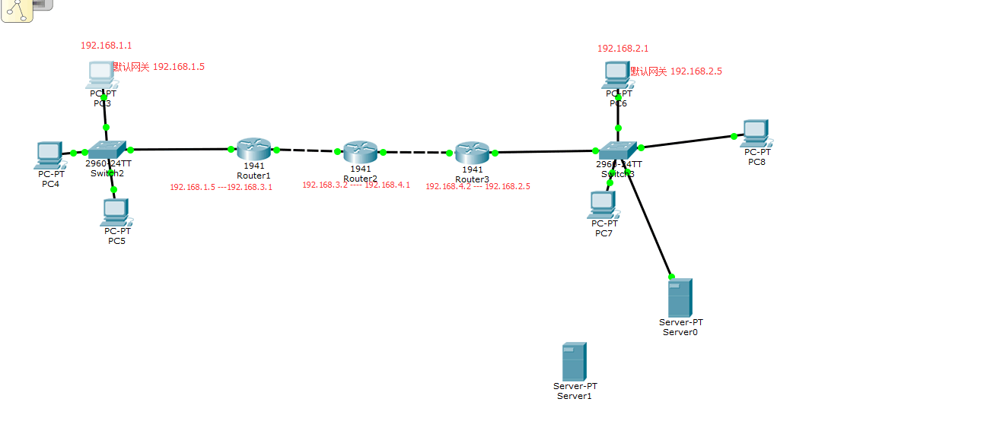
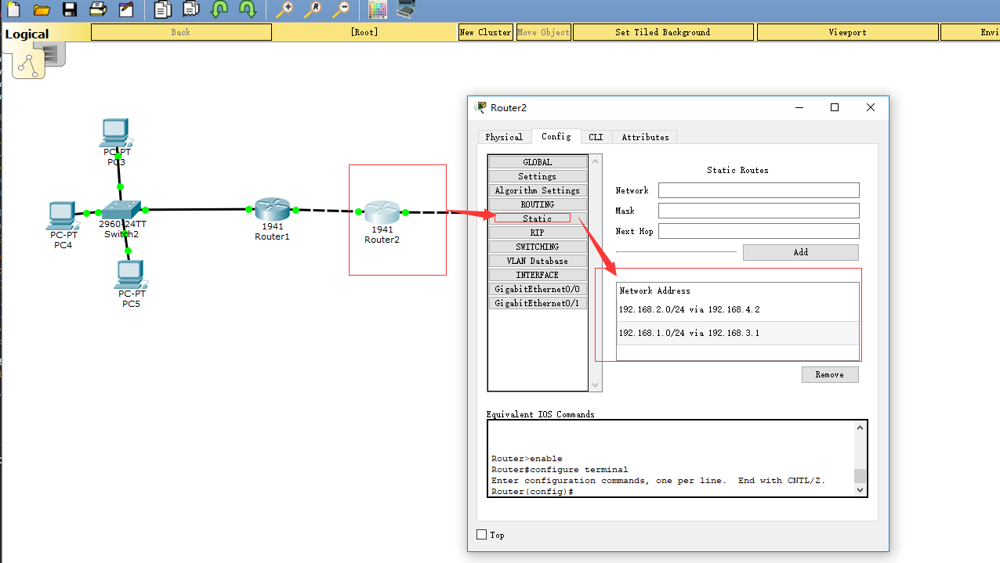

import sys
sys.path #可以列出导入模块的路径
#如果需要将其他的模块也想导入其中可以添加到这个路径下
sys.path.append('/home')
#如果修改了某个模块的功能，需要刷新里面的调用方法，则需要重新导入
from imp import *
reload(test) #test是需要重新导入的模块
== 用来判断某个变量的值是否相等（内容）
is 用于判断是否指向同一个东西（地址）
浅拷贝，两个不同的变量指向同一个地址
a = [1,2,3]
b = a
b就是浅拷贝
深拷贝
内内容一样，但地址不一样，如果的是list，tuple也是同样的创建新的对象，拷贝其内容
import copy
a = [1,2,3]
b = copy.deepcopy(a)
copy与deepcopy的区别
copy是只拷贝第一层
deepcopy是循环拷贝
x:单前置下划线，私有化属性或方法，from somemodule import *禁止导入，类对象和子类可以访问
xx:双前置下划线，无法在外部直接访问
xx__:双前后下划线，用户名字空间的魔法对象或属性
XX：单后置下划线，用于避免与python关键字冲突
但可以使用
类名_变量名 访问私有变量(类名重组)
class Test(object):
def __init__(self):
self.__num = 100
def setNum(self, num):
self.__num = num
def getNum(self):
return self.__num
num = property(getNum, setNum)
test = Test()
print(test.num) #100
test.num = 20
print(test.num) #20
-----------------------------------------------------------
class Test(object):
def __init__(self):
self.__num = 100
@property
def num(self):
return self.__num
@num.setter
def num(self, num):
self.__num = num
test = Test()
print(test.num)
test.num = 20
print(test.num)
def w1(func):
def inner():
print("---正在验证权限----")
func()
return inner
def f1():
print('----f1----')
def f2():
print('----f2----')
f1 = w1(f1) # 重命名函数f1
f2 = w1(f2) # 重命名函数f2
f1()
f2()
---正在验证权限----
----f1----
---正在验证权限----
----f2----
-----------------------------------------------------------
def w1(func):
def inner():
print("---正在验证权限----")
func()
return inner
@w1
def f1():
print('----f1----')
@w1
def f2():
print('----f2----')
f1()
f2()
---正在验证权限----
----f1----
---正在验证权限----
----f2----
---------------- 可以加多个装饰器 -----------------------
def w1(func):
def inner():
print("---正在验证权限----")
func()
return inner
def w2(func):
def inner():
print("---正在验证权限2----")
func()
return inner
@w2
@w1
def f1():
print('----f1----')
@w2
@w1
def f2():
print('----f2----')
f1()
f2()
---正在验证权限2----
---正在验证权限----
----f1----
---正在验证权限2----
---正在验证权限----
----f2----
def fun(functionName):
def func_in(*args, **kwargs):
return functionName(*args, **kwargs)
return func_in
def timefun_arg(pre="hellow"):
def timefun(func):
def wrappend():
print('----args=%s functiomname = %s' % (pre, func.__name__))
return func()
return wrappend
return timefun
@timefun_arg('xiaotao')
def foo():
print('foo()-----')
foo()
globals(全局变量)
locals（局部变量）
LEGB规则
locals(局部变量)>enclosing(闭包)>globals（全局变量）>builltins(内建函数)
Python可以动态的给对象添加属性，但不能动态的添加方法
可以使用types
import types
def run(self):
print('run....')
p.run = types.MethodType(run,p)
#静态方法
@staticmethod
def test():
class P(object):
pass
P.test = test
P.test()
#类方法
@classmethod
def printNum(cls):
print('-------cls')
P.printNum = printNum
p.printNum()
(x*2 for in range(10)) #注意是()括号
next(x) #获取下一个
def creatNum():
print('----start-----')
a,b=0,1
for i in range(5):
yield b #第二种方式的生成器
a,b=b.a+b
#send
class Test(object):
def test():
i = 0
while i<5:
temp = yield i
print(temp)
i=i+1
t = Test()
t.__next__() #0
t.__next__() #None 1
t.__next__() #None 2
t.send('Hehe') #hehe 3
t.__next__() #None 4 值只保存一次
#send与__next__的区别是 可以传值
def test1():
while True:
print("--1--")
yield None
def test2():
while True:
print("--2--")
yield None
t1 = test1()
t2 = test2()
while True:
t1.__next()__
t2.__next()__
class Test(object):
def __init__(self, func):
print('--初始化---')
print('--func name is %s ' % func.__name__)
self.__func = func
def __call__(self, *args, **kwargs):
print('---装饰器中的功能---')
self.__func()
@Test #相当于 Test(test)
def test(): #相当于 test = Test(test)
print('--test--')
test()
type动态创建类
def printNunm(self):
print("---printNum--%d" % self.num)
Test2 = type('Test2', (), {"num": 3, "printNunm": printNunm}) # ()参数 {}属性
t = Test2()
t.printNunm()
python对小整数的定义是[-5,257)这些整数对象是提前建立好的，不会被垃圾回收，所有位于这个范围内的整数使用的都是同一个对象
单个字符共用对象，常驻内存
单个单词，不可修改，默认开启intern机制，共用对象，引用计数为0，则销毁
Gc垃圾回收机制
引用计数为主(循环引用解决不了)
隔代回收（处理循环引用）:等到一段时间将链上清理引用
import gc
import sys
a = 10
print(gc.get_threshold()) # 获取gc模块中自动执行垃圾回收的频率
print(gc.get_count()) # 获取当前自动执行垃圾回收的计数器，返回一个长度为3的列表
print(sys.getrefcount(a)) # 查看引用计数
gc.collect() # 显示的清理垃圾
gc.garbage # 显示垃圾被清理的对象
init #构造初始化函数
del #生成实例所需属性
new #实例所在的类
str #实例字符串表示，可读性
del #删除实例
getattrribute #属性访问器
bases #类所有父类构成元素
坑
class Person(object):
def __getattribute__(self, item):
print('---test---')
if item.startswith('a'):
return 'hahaha'
else:
return self.test
def test(self):
print('heihei')
t = Person()
t.a # 正常打印 hahaha
t.b # 崩溃
原因是当执行t.b时，会执行代码self.test的值，因为self此时就是t这个对象，这样就产生了递归调用
这个程序会无休止的执行下去，最终吃光内存，程序崩溃
range()
map(lambda x,y : x+y,[1,2,3],[4,5,6]) #[5,7,9]
filter(lambda x:x%2,[1,2,3,4]) #[1,3]
reduce(lambda x,y:x+y,[‘aa’,’bb’,’cc’],’dd’) #’ddaabbcc’
sorted(iterable,cmp=None,key=None,reverse=False)
# 偏函数
import functools
def showArgs(*args, **kw):
print(args)
print(kw)
p1 = functools.partial(showArgs, 1, 2, 3)
p1() # (1,2,3) None
p1(5) # (1, 2, 3, 5)
python -m http.server PORT(端口号)
进入pdb调试模式
python -m pdb test1.py (进入调试模式)
l #显示自己代码（—> 表示当前模块运行的位置）
n #执行下一步
c #放开调试(进入下一个d断点）
b+数字 #调到指定的位置
clear+数字 #清楚指定断点
a #打印所有的形参数据
p+变量 #打印指定的变量的值
s #进入函数中
r #快速执行到函数最后一行
q #退出调试
import os
ret = os.fork()
ret==0 子进程
ret>0 父进程
全局变量在多进程中是互不干扰的
多个fork
import os
import time
ret = os.fork()
if ret == 0:
print('--1--')
else:
print('--2--')
ret = os.fork()
if ret == 0:
print('--11--')
else:
print('--12--')
--1--
--2--
--11--
--12--
--11--
--12--
执行流程大概是
|
--1-- --2--
| |
--11-- --12-- --11-- --12--
Process
p.is_alive() 判断进程的事例是否还在运行
p.start() 开启进程
p.join() 阻塞，等待
p.terminate() 不管任务是否完成，立即终止
p.run() 若果没有给定target阐述，对象调用start()方法是，就将执行对象中的run方法
自定义Porcess重写run方法
进程池Pool
from multiprocessing import Pool
Pool.apply_async(需要调用的目标,(传递给目标的参数元祖,)) 非阻塞方式
Pool.apply(需要调用的目标,(传递给目标的参数元祖,)) 阻塞式
Pool.close() 关闭线程池，不在添加新任务
Pool.join() 主进程 创建/添加 任务后，主进程 默认不会等待进程池中的任务执行完后才结束而是当主进程任务做完之后，立马结束，如果这个地方没有join，会导致进程池中的任务不会被执行
进程间通信
Queue.size() 返回当前队列包含消息数量
Queue.empty() 如果队列为空，返回True否则False
Queue.full() 判断队列是否已经满了
Queue.get([block[,time]]) 获取队列中的一条消息，然后从队列中移除
Queue.get_nowait()
Queue.put(item,[block[,timeout]])
进程池间的通信要使用
import multiprocessing import Manger,Pool
q = Manger().Queeu()
from threading import Thread
线程之间共享全局变量
保证同步的修改变量
mutex = threading.lock()
mutex.acquire([blocking])
blocking如果设置为True，则当前线程会阻塞，直达获取这个锁为止(默认为True)
blocking如果设置为False,则当前线程不会阻塞
也可以添加超时时间!
mutex.release()
FIFO 先进先出
p2
from Queue import Queue
p3
form queue import Queue
ThreadLocal 每个线程存有独立的一份变量
import threading
threading.local()
from multiprocessing import Pool
import time
import os
def test():
print("--- 进程池中的进程 --pid=%d,ppid=%d ---" % (os.getpid(), os.getppid()))
for i in range(3):
print("---%d---" % i)
time.sleep(1)
return "Hahaha"
def test2(args):
print("---callback func --- pid = %d" % os.getppid())
print("---callback func --- args=%s" % args)
def run1():
pool = Pool(3)
pool.apply_async(func=test, callback=test2)
time.sleep(5)
print("---主进程--%d" % os.getpid())
if __name__ == "__main__":
run1()
tftp下载器
tftp协议:
读写请求 |操作码 1/2(RD/WR)|文件名|0|octet|0|
数据包 |操作码 3(DATA)|块编号|数据(512 Bytes Data)| #总长度为 2+2+512 516（发过来的数据包少于516 发送完成）
ACK |操作码 4(ACK)|块编号| #回复确认(按照服务器返回的端口，去回复这个端口)
ERROR |操作码 5(ERR)|差错码|差错信息|0|
tftp下载器代码
from socket import *
import struct
import time
import os
def main():
downloadFileName = input("请输入要下载文件名字")
udpsocket = socket(AF_INET, SOCK_DGRAM)
# 组装数据
requestFileData = struct.pack("!H%dsb5sb" % len(downloadFileName), 1, downloadFileName.encode("UTF-8"), 0, b"octet",
0)
# 发送下载请求
udpsocket.sendto(requestFileData, ("127.0.0.1", 69))
flag = True
num = 0
f = open(downloadFileName, "w")
while True:
responsedata = udpsocket.recvfrom(1024)
recvData, serverInfo = responsedata
opNum = struct.unpack("!H", recvData[:2])
packetNum = struct.unpack("!H", recvData[2:4]) # 块编号
print(packetNum[0])
print("opNum%s" % opNum)
print(serverInfo)
if opNum[0] == 3:
num = num + 1
# 如果一个文件特别大超过了两个字节的计算
if num == 65536:
num = 0
if num == packetNum[0]:
f.write(recvData[4:].decode("UTF-8"))
num = packetNum[0]
ackData = struct.pack("!HH", 4, packetNum[0])
udpsocket.sendto(ackData, serverInfo)
elif opNum[0] == 5:
print("没有这个文件")
flag = False
if len(recvData) < 516:
break
if flag == True:
f.close()
else:
os.unlink(downloadFileName)
if __name__ == "__main__":
main()
网络中的广播
192.168.1.0 ——> 网络号
192.168.1.255 ——> 广播地址
import socket, sys
dest = ('<broadcast>', 8080)
s = socket.socket(socket.AF_INET, socket.SOCK_DGRAM)
s.setsockopt(socket.SOL_SOCKET, socket.SO_BROADCAST, 1)
s.sendto("发送方式发生".encode("gb2312"), dest)
print("广播已发送")
Tcp
服务端
#服务端
from socket import *
serverSocket = socket(AF_INET, SOCK_STREAM)
serverSocket.bind(("192.168.179.1", 8080))
serverSocket.listen(5)
clientSocket, clientInfo = serverSocket.accept()
recvData = clientSocket.recv(1024)
print(recvData.decode("gb2312"))
clientSocket.close()
serverSocket.close()
客户端
from socket import *
tcpClient = socket(AF_INET, SOCK_STREAM)
tcpClient.connect(("192.168.179.1", 8080))
tcpClient.send("你好 呀！".encode("gb2312"))
recvData = tcpClient.recv(1024)
tcpClient.close()
TCP三次握手，四次挥手


网络通信过程
例如 192.168.1.1 ping 192.168.1.2
ping 命令发送 ICMP协议
获取Mac地址 ARP协议 根据ip找Mac地址
arp -a 查询Mac地址对应的ip地址（在一段时间清空）
交换机：
只能连接同一网段下的设备。
路由器：
连接多个逻辑上分开的网络（不同网段，一段一段的查询）。
Mac地址：在两个设备之间通信时在变化
而IP地址：在整个通信过程中都不会发生任何变化
ip：标记逻辑上的地址
Mac：标记实际转发数据时的设备地址
netmask:和ip地址一个来确定网络号
默认网关：发送的ip不在同一个网段内，那么会把这个数据转发给默认网关（路由器的ip地址）
DNS服务器:域名解析成ip


访问百度的底层步骤
1.先要解析出baidu的对应的ip地址
2.得到baidu对应的ip之后，发送tcp的3次握手，进行连接
3.使用http协议发送请求数据给web服务器
4.web服务器接受请求，返回对应的结果
5.接受数据渲染网页
TTL 表示经过多少个路由
MSL 表示一个数据包在网络上存活的时间
listen的参数和操作系统有关！
常见网络攻击
1.tcp半链接攻击
典型的就是Dos攻击
效果就是服务器TCP链接资源耗尽，停止响应正常的TCP链接请求。
客户端连接服务器时，收到服务器响应，但有没有给服务器确定的信息，导致服务器一直等待。
2.dns攻击
dns服务器被劫持
dns欺骗
nslookup 查看域名对应的IP
3.arp攻击
只有公网才能上网
单任务非阻塞
# 单进程非阻塞式
from socket import *
serverSocket = socket(AF_INET, SOCK_STREAM)
localAddr = ("", 7788)
serverSocket.bind(localAddr)
# 让这个socket变为非阻塞
serverSocket.setblocking(False)
serverSocket.listen(100)
clientAddrList = []
while True:
try:
newSocket, clientAddr = serverSocket.accept()
except:
pass
else:
print("一个新客户端%s" % str(clientAddr))
newSocket.setblocking(False)
clientAddrList.append((newSocket, clientAddr))
for clientSocket, clientAddr in clientAddrList:
try:
recvData = clientSocket.recv(1024)
except:
pass
else:
if len(recvData) > 0:
print("%s:%s" % (str(clientAddr), recvData.decode("gb2312")))
else:
clientSocket.close()
clientAddrList.remove((clientSocket, clientAddr))
select版的TCP服务器
# tcp server select版
import socket
import select
import sys
serverSocket = socket.socket(socket.AF_INET, socket.SOCK_STREAM)
localAddr = ("", 7788)
serverSocket.bind(localAddr)
serverSocket.listen(100)
inputs = [serverSocket, sys.stdin]
running = True
while True:
readable, writeable, exceptional = select.select(inputs, [], [])
for sock in readable:
if sock == socket:
conn, addr = serverSocket.accept()
inputs.append(conn)
# 监听键盘的输入
elif sock == sys.stdin:
cmd = sys.stdin.readline()
running = False
break
# 有数据到达
else:
data = sock.recv(1024)
if data:
sock.send(data)
else:
inputs.remove(sock)
sock.close()
#如果检查用户输入敲击键盘，那么就退出
if not running:
break
serverSocket.close()
select 对进程监视的文件描述的数量存在限制默认为1024